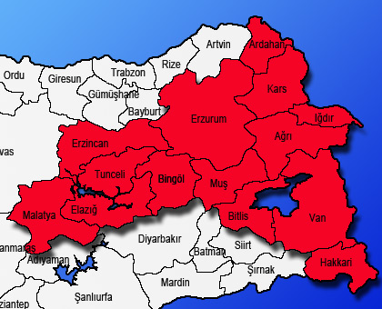

doğu anadolu bölgesi
Geri

konum
.Türkiye'nin Doğusunda yer alır.
iklim
: Kışları soğuk ve karlı, yazları ise sıcak ve kuraktır.
bölgede yetiştirilen ürünler
:arpa,buğday,tütün,pamuk
doğu anadolu bölgesi